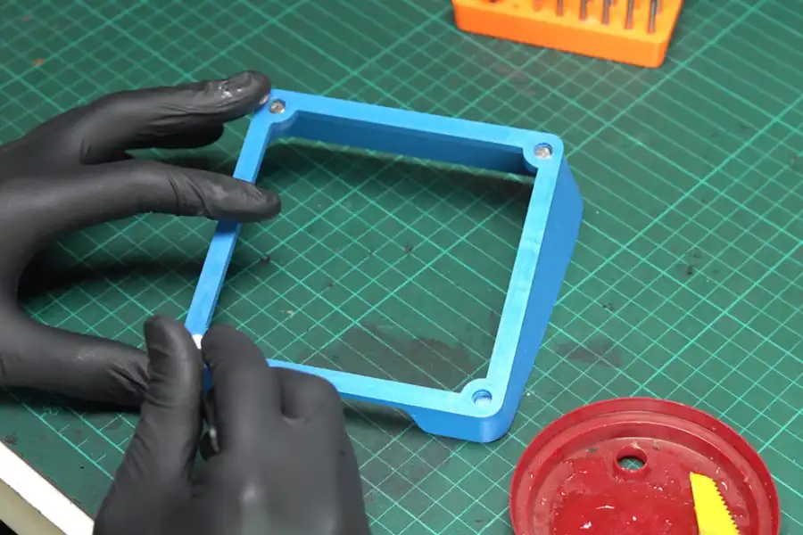

The possibilities of 3d printers!
3D printers open the door to nearly endless possibilities—whether you're creating for fun, function, or innovation. Here are just a few of the amazing things you can bring to life.
Useful Things
3D printers are revolutionizing the way we produce useful objects, offering the ability to create custom tools, replacement parts, and everyday items on demand. From functional household items like hooks, organizers, and phone holders to specialized components for machines, 3D printing allows for rapid creation and customization. The convenience of printing on demand not only reduces waste but also eliminates the need to wait for shipments or find specific items in stores. Whether it’s a hard-to-find part for a broken appliance or a new tool for a DIY project, 3D printing makes it easy to produce exactly what is needed when it’s needed.
Hobby Figures
In the realm of hobbies, 3D printers have opened up a world of possibilities for enthusiasts to create intricate figures and models. Hobbyists can design and print custom figurines, detailed miniatures for tabletop games, or even collectibles that reflect their personal style. 3D printing gives hobbyists the freedom to craft pieces with precise detail, ensuring that every figure is exactly as envisioned. Whether it’s a one-of-a-kind sculpture or a part of a larger diorama, 3D printing provides the perfect medium for bringing these creative visions to life.
Design Testing
Design testing becomes significantly easier with 3D printing, as it allows designers to quickly prototype and test their concepts before committing to mass production. Rapid prototyping with 3D printing offers an efficient way to experiment with different designs, materials, and features, all in real-world conditions. This process cuts down on the need for expensive tooling and lengthy production times, enabling designers to iterate and improve their products faster. Whether for consumer goods, automotive parts, or tech gadgets, 3D printing helps bring better designs to market more quickly and cost-effectively.
Robotics
In the field of robotics, 3D printing is transforming the way custom parts and components are created. Engineers and robotics enthusiasts can print specialized parts that are tailored to specific needs, whether it’s lightweight structures, intricate joints, or custom sensors. This flexibility not only accelerates the development process but also reduces the cost of producing unique parts that might otherwise be expensive or hard to obtain. With the ability to rapidly prototype and produce functioning robotic systems, 3D printing is driving innovation and empowering creators to experiment and push the boundaries of what’s possible in robotics.
Education and Learning
3D printing has become a powerful tool in education, providing students and educators with hands-on learning experiences that were previously difficult to achieve. From creating models of historical artifacts to building complex geometric shapes, 3D printers help bring abstract concepts to life in a tactile and engaging way. In engineering and science classrooms, students can design and test their own projects, fostering creativity and problem-solving skills. Additionally, 3D printing can be used to produce educational materials like visual aids, anatomical models, and interactive learning tools, enhancing the educational experience and helping to bridge the gap between theory and practical application.